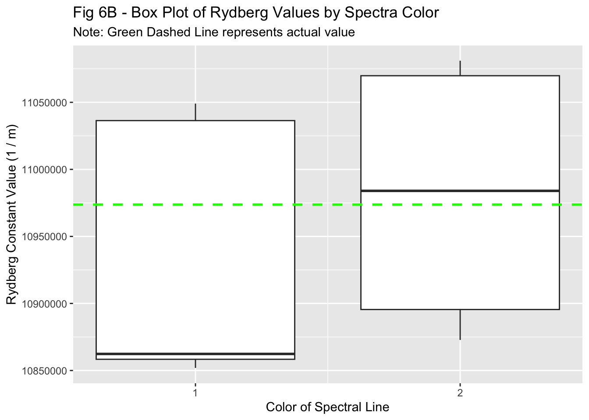
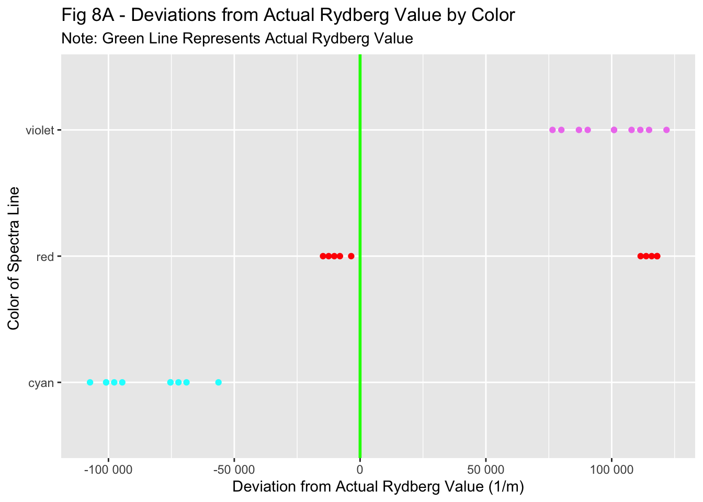

r_exp_vals <- balmer_data |>select(R)r_exp_mu <-10951388r_exp_sd <-88578.43t.test(r_exp_vals, mu = r_val)
One Sample t-test
data: r_exp_vals
t = -1.3816, df = 29, p-value = 0.1776
alternative hypothesis: true mean is not equal to 10973732
95 percent confidence interval:
10918312 10984464
sample estimates:
mean of x
10951388
Distribution of Rydberg Values
ggplot(data = balmer_data, mapping =aes(x = R, fill = color))+geom_bar(width =2500)+scale_fill_manual(values =c("violet"="violet", "cyan"="cyan", "red"="red"))+scale_y_continuous(breaks =c(0,1,2))+scale_x_continuous(labels =scientific_format())+geom_vline(xintercept = r_val, color ="green", linetype ="dashed", size =1.5)+labs(title ="Fig 4 - Calculated Values for Rydberg Constant",subtitle ="Note: Green Dashed Line represents actual value",x ="Value in Units of 1/m",y ="Count" ) +guides(fill =FALSE)+theme_minimal()
Warning: Using `size` aesthetic for lines was deprecated in ggplot2 3.4.0.
ℹ Please use `linewidth` instead.
Warning: The `<scale>` argument of `guides()` cannot be `FALSE`. Use "none" instead as
of ggplot2 3.3.4.
Warning: `position_stack()` requires non-overlapping x intervals.
Histogram of R Values by Spectra
ggplot(data = balmer_data, mapping =aes(x = R, fill = color))+geom_histogram(binwidth =15000)+scale_x_continuous(labels =scientific_format())+scale_fill_manual(values =c("cyan"="cyan", "red"="red", "violet"="violet"))+geom_vline(xintercept = r_val, color ="green", linetype ="dashed", size =1.5)+facet_wrap(~ color)+guides(fill =FALSE)+labs(title ="Fig 5 - Histogram of Rydberg Values by Spectra",subtitle ="Note: Dashed Green Line represents actual value",y ="Frequency",x ="Rydberg Constant Value (1/m)" )
Box Plot of Rydberg Values by Color
ggplot(balmer_data, mapping =aes(x = color, y = R, color = color))+geom_boxplot()+scale_color_manual(values =c("red"="red", "cyan"="cyan", "violet"="violet"))+geom_hline(yintercept = r_val, color ="green", linetype ="dashed", size =1)+guides(color =FALSE)+labs(title ="Fig 6B - Box Plot of Rydberg Values by Spectra Color",x ="Color of Spectral Line",y ="Rydberg Constant Value (1 / m)",subtitle ="Note: Green Dashed Line represents actual value" )
Null - Box Plot of Rydberg Values by Vernier
balmer_data |>group_by(vernier) |>ggplot(mapping =aes(group = vernier, x = vernier, y = R))+geom_boxplot()+scale_x_continuous(breaks =c(1,2))+geom_hline(yintercept = r_val, color ="green", linetype ="dashed", size =1)+guides(color =FALSE)+labs(title ="Fig 6B - Box Plot of Rydberg Values by Spectra Color",x ="Color of Spectral Line",y ="Rydberg Constant Value (1 / m)",subtitle ="Note: Green Dashed Line represents actual value" )

Box Plot of Rydberg Values
ggplot(balmer_data, mapping =aes(y = R))+geom_boxplot()+geom_hline(yintercept = r_val, color ="green", linetype ="dashed", size =1)+labs(title ="Fig 6A - Box Plot of Rydberg Values",y ="Rydberg Constant Value (1 / m)",subtitle ="Note: Green Dashed Line represents actual value" )+theme(axis.title.x =element_blank(),axis.text.x =element_blank(),axis.ticks.x =element_blank() )
# A tibble: 3 × 2
color std
<chr> <dbl>
1 cyan 17284.
2 red 66095.
3 violet 15260.
ggplot(sd_data, mapping =aes(x = color, y = std, fill = color))+geom_col()+scale_fill_manual(values =c("red"="red", "cyan"="cyan", "violet"="violet"))+guides(fill =FALSE)+labs(title ="Fig 7 - SD in Rydberg Values by Color",x ="Color of Spectra",y ="Sample SD (1/m)" )
Difference from Actual Value by Color
balmer_data |>mutate(dif = r_val - R ) |>ggplot(mapping =aes(y = color, x = dif, color = color))+geom_point()+geom_vline(xintercept =0, color ="green", size =1)+scale_color_manual(values =c("red"="red", "cyan"="cyan", "violet"="violet"))+scale_x_continuous(labels =label_number())+guides(color =FALSE)+labs(title ="Fig 8A - Deviations from Actual Rydberg Value by Color",subtitle ="Note: Green Line Represents Actual Rydberg Value",x ="Deviation from Actual Rydberg Value (1/m)",y ="Color of Spectra Line " )

Box Plot of Differences
balmer_data |>mutate(dif = r_val - R ) |>ggplot(mapping =aes(y = color, x = dif, color = color))+geom_boxplot()+scale_color_manual(values =c("red"="red", "cyan"="cyan", "violet"="violet"))+scale_x_continuous(labels =label_number())+guides(color =FALSE)+geom_vline(xintercept =0, color ="green", size =1)+labs(title ="Figure 8B - Box Plot of Distribtion of Deviations by Spectra Color",subtitle ="Note: Green Line represents actual Rydberg Value",x ="Deviation from Actual Rydberg Value (1/m)",y ="Color of Spectra Line" )